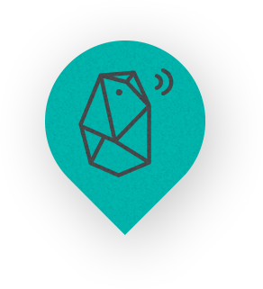

<ion-view view-title="Indoor Mapping">
<ion-content>
  <div class="row responsive-sm" ng-controller="AuthCtrl as authCtrl">
  	<div class="col">
  		<h4 class="title"><i class="icon ion-location"></i> Welcome To Indoor Mapping </h4>
  		<div class="item item-image">
  			
		</div>
	</div>
  	<div class="col" align="center">
  		<a href="/#/login" class="button button-block button-balanced" ng-hide="authCtrl.isLoggedIn()"><i class="icon ion-log-in"> </i> Login
  		</a>
  		<a href="/#/register" class="button button-block button-positive" ng-hide="authCtrl.isLoggedIn()"><i class="icon ion-person"></i> Register
  		</a> 
  		<a href="/#/map" class="button button-assertive" ng-show="authCtrl.isLoggedIn()">
  		<i class="ion-ios-world"> </i> Map
  		</a>
  		<button ng-click="authCtrl.logout()" class="button button-dark" ng-show="authCtrl.isLoggedIn()">
  			<i class="icon ion-log-out"></i> Logout
  		</button>
  	</div>
  </div>
</ion-content>
</ion-view>
